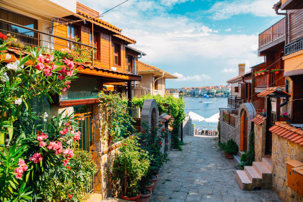

Summer tourism is one of the most popular ways to experience Bulgaria. During the warm months, the country becomes a lively destination for travelers who want to enjoy beaches, nature, festivals, and outdoor activities. Bulgaria’s summer season usually lasts from June to September, bringing sunny weather, long daylight hours, and pleasant temperatures that make it ideal for exploration and relaxation. Visitors from many parts of Europe and the world travel to Bulgaria during this time to experience its diverse landscapes, welcoming culture, and vibrant summer atmosphere.
One of the main highlights of summer tourism in Bulgaria is the famous Black Sea Coast. Stretching for hundreds of kilometers, this coastline offers beautiful sandy beaches, clear blue waters, and numerous seaside resorts. Popular destinations along the coast provide visitors with a wide variety of activities, including swimming, sunbathing, water sports, boat trips, and beach festivals. Many coastal towns also offer restaurants, cafes, and entertainment venues where tourists can enjoy local seafood and traditional Bulgarian cuisine while overlooking the sea.
In addition to the beaches, summer is also a perfect time to explore Bulgaria’s mountains and natural parks. The country has several mountain ranges, including the Rila, Pirin, and Balkan Mountains, which offer cool temperatures and breathtaking scenery during the summer months. These areas are popular for hiking, camping, mountain biking, and nature photography. Visitors can walk along forest trails, discover waterfalls and glacial lakes, and enjoy the peaceful environment away from busy city life.
Summer tourism also provides many opportunities to experience Bulgarian culture and traditions. During the summer season, numerous festivals and cultural events take place throughout the country. These events celebrate traditional music, dance, crafts, and local customs. Tourists can watch colorful folklore performances, visit local markets, and learn about traditional Bulgarian crafts and foods. These festivals allow visitors to connect with the country’s cultural heritage while enjoying a lively and welcoming atmosphere.
Many historic towns and cities also become popular tourist destinations during the summer. Visitors often explore ancient ruins, museums, churches, and old architectural neighborhoods while enjoying pleasant weather. Outdoor cafes, public squares, and parks become lively gathering places where both locals and tourists relax and socialize.
Overall, summer tourism in Bulgaria offers a balanced mix of relaxation, adventure, culture, and natural beauty. Whether travelers prefer spending time on sunny beaches, exploring historic towns, hiking through mountain landscapes, or attending cultural festivals, Bulgaria provides a wide range of experiences that make summer travel memorable and enjoyable.